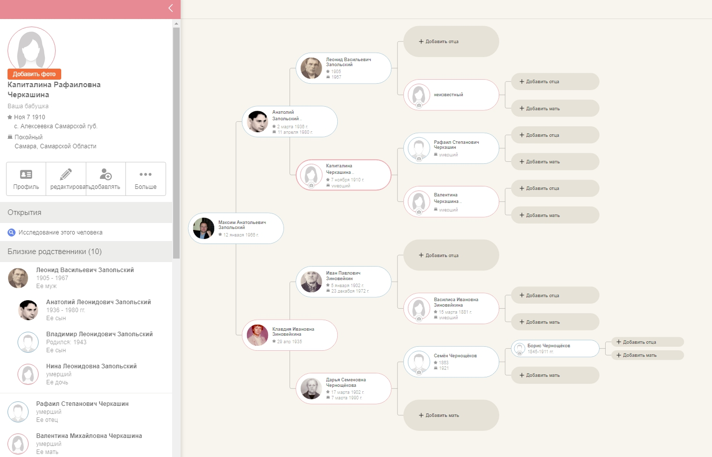
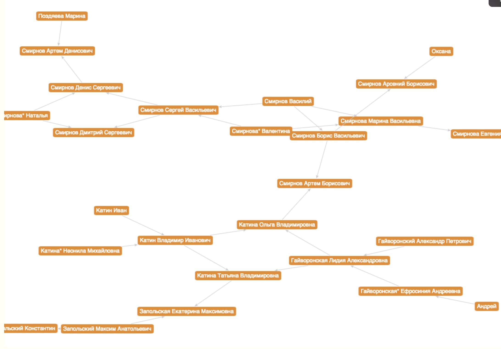
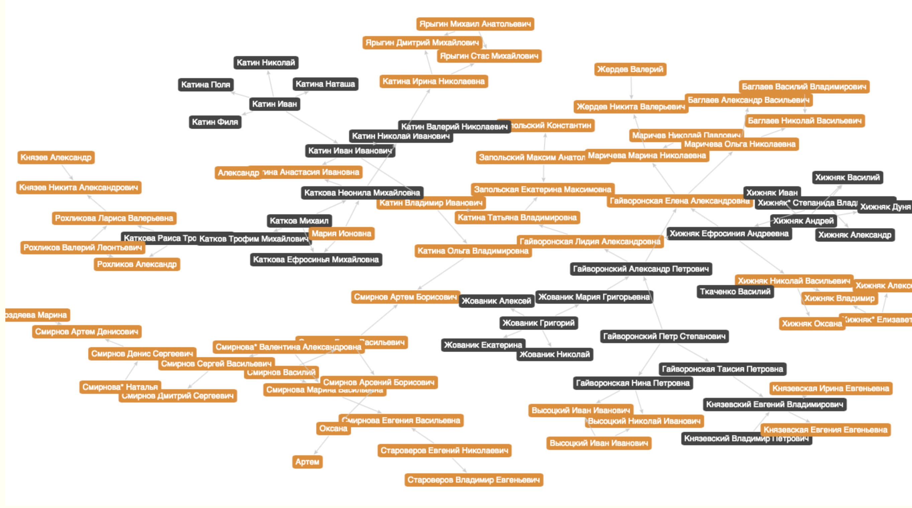
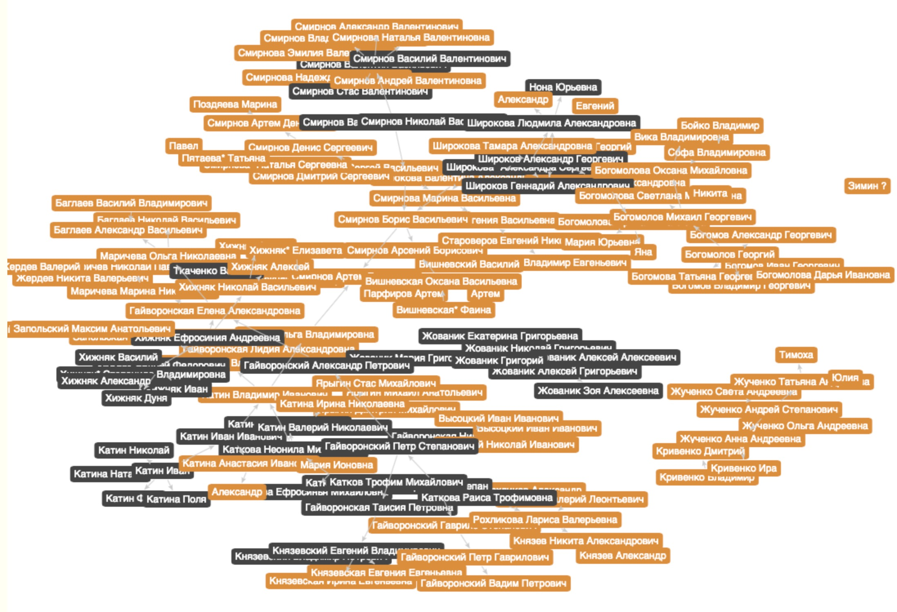
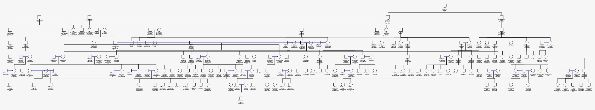
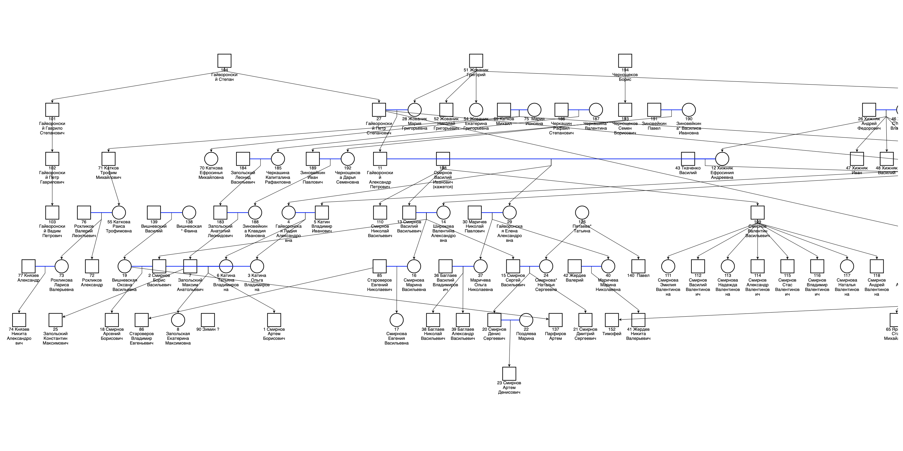
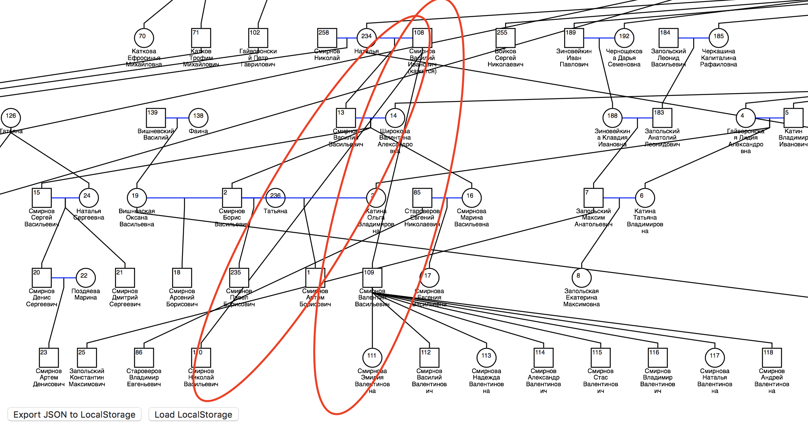
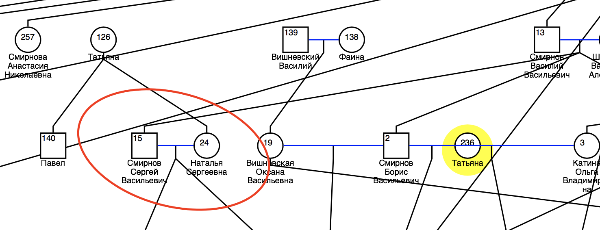
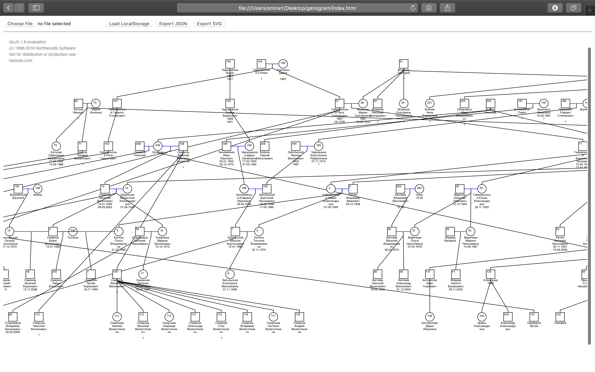
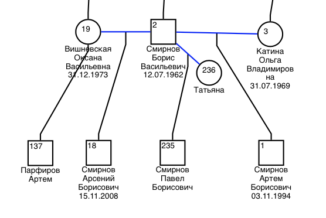

Как я древо семьи строил
В ноябре 2018 года меня вновь посетила идея создания древа моей семьи. Особенно на это подтолкнула оцифровка архивов Великой Отечественной Войны, в которой я нашел своих предков:
- Гайворонский Гавриил Степанович
- Катин Николай Иванович
- Катин Иван Иванович
- Хижняк Василий Андреевич
- Хижняк Иван Андреевич
- Жованник Гавриил Григорьевич
До этого я пытался как-то записать все на бумаге, но буквально через месяц это было утеряно. В связи с чем в этот раз я решил хранить данные в электронном формате.
Прежде чем делать что-то своё, я:
- Определил ряд критериев к сервису:
- Возможность импорта/экспорта всех данных в простом виде (возможность создания бекапа и независимость от одного сервиса)
- Возможность создания сложных структур (не только вертикальные генеалогические линии, но и горизонтальные, также “множенство”, “многомужество” и другие ситуации)
- “Приемлемое” отображение в виде графа
- Изучил всевозможные аналоги на рынке
К сожалению я не нашел удовлетворяющего критериям сервиса. Пример сервиса:

Подавляющая масса была нацелена на создание простых вертикальных деревьев, и, конечно, не учитывала горизонтальные связи + сложные ситуации, с которыми я и столкнулся, о чем напишу далее.
В последствии я решил сделать универсальный инструмент для хранения, отображения реальной картины родословной.
Модель данных
Для начала я принял соглашение о том, что связью будет являться указание на родителя. Тк это обуславливается природой людей. И всегда у каждого человека будет мать и отец. Удивительно, но даже тут есть исключительные ситуации о которых я напишу ниже.
Свое решение я начал с создания примитивной структуры данных, и сбора данных в таблицу Numbers (Excel).
| Поле | Ключ |
|---|---|
| ID | key |
| Sex | s |
| Last name or maiden name | surn |
| Married name | marn |
| First name | firn |
| Second name | secn |
| Date of birthday | bday |
| Date of death | dday |
| Father ID | f |
| Mother ID | m |
| Comment | com |
В этой модели данных единицой является некоторый человек с уникальным ID, у него могут быть ссылки на ID матери и отца. Также у каждого элемента есть поля которые его описывают: имя, дата рождения и смерти, пол, комментарий для дополнительной информации.
Отображение графа
До этого в университете, в 2013 году в рамках хакатона и курсовой работы, я делал сервис для поиска родственных связей по базе жителей Самарской области. Мой интерес представляло – по данным места жительства, дате рождения, фамилии, имени и отчеству определить с некоторой вероятностью и отобразить на графе какую-то семью. Тогда для отображения графа я использовал библиотеку sigmajs. Эта библиотека написана на JavaScript и она удовлетворяла моему видению того, что я собираюсь сделать.
День 1
Просто перебрав в голове всех ближайших родственников, у меня получилось 26 человек. Конечно информация была не полной, но это был 1 день, когда я начал.

День 2
После я напряг бабушку вспоминать и узнавать всех наших предков и родственников, и начал всё активно записывать в свою таблицу. Уже к ночи следующего дня мы записали информацию о ≈100 людях. А также я добавил заполнение черным цветом, узлов умерших людей.

День 3
После чего мы начали показывать эту картинку нашим родственникам и просить их рассказать о тех, кого мы не знаем. Благодаря обильному общению через мессенджеры и телефонные звонки к следующему вечеру мы собрали информацию ≈200 наших родственниках.

Хочу заметить, что на графе отображены ближашие родственники по горизонтали и их ближайшие предки, которых они помнят. Что естественно является не полной картиной при построении вертикального древа. Но уже на этом этапе стало понятно, что используемая библиотека построения графа не подходит для отображения дерева.
Через 6 дней
Буквально через 6 дней я попробовал с десяток разных библиотек на JS и выбрал библиотеку GoJS. Одна из причин по которой я это сделал было то, что я нашел пример для построения графа с автоматической визуализацией поколений. Это позволяло автомачески расположить людей на графе, а также визуализовароть связи под прямым углом. 
Однако после этого и начали проступать основные проблемы отображения, которые раньше были не видны.
Дальнейший поиск информации о родственниках легко продолжать горизонтально (по своему поколению), однако чтобы искать вертикальные связи (искать своих предков) нужно заниматься изучением архивов, баз данных, кладбищь, изучением родословных и фамилий. Вот кстати два сервиса которые могут в этом помочь: vgd.ru и geno.ru.
GoJS
Нужно заметить, что GoJS подошла на стадии создания прототипа, однако ввиду неадекватной цены лицензии в 3495$ за 3 года, использовать её на продакшене не получится. Однако в её примерах содержатся неплохие алгоритмы и принципы, которые можно позаимствовать.
Проблемы отображения графа на плоскости
Для начала, если не рассматривать сложных случаев, стандартные алгоритмы GoJS для расположения вершин не справлялись:
-
При рисовании ребер под 90 градусов многие ребра накладывались друг на друга, и не сдвинув ребра, было не понять где какое выходит. Поэтому я сразу исправил их рисование на прямые линии.

-
Некоторые связи улетали не в те поколения. Дети как бы перепрыгивали сильно вниз.

-
Граф переплетался и накладывался, даже в тех случаях где можно было этого не делать.

Стало очевидно, что нужны правила отображения такого графа. И вообще задача создания алгоритма расположения вершин – основная работа.
Интерфейс пользователя
Также я добавил функции для импорта в формате .csv, также экспорта в .svg, .json, а хранение данных перенес в LocalStorage браузера, таким образом перезагружая страницу, данные не терялись и отпала необходимость использовать БД.

А также я понял, что:
- Добавление людей осуществлять в
Numbersне удобно, нужен интегрированный веб-интерфейс. - Нужен поиск по людям.
- Нужна функция подсветки маршрута от одного человека к другому.
- Нужно, чтобы при нажатии на элемент отображается все его “прямое” дерево вверх и вниз.
- Нужна возможность добавлять другую информацию, например простой текст, ссылки, фотографии.
Эти задачи я пока отложил и начал думать про реализацию нормального отображения графа, а для этого сначала нужно побороть теорию.
Алгоритм отображения
Писать алгоритм я начал с задания ограничений и изучения области работы.
Ограничения
Наука, занимающейся выявлением родословных закономерностей, обобщением сведений о происхождении человека, его семьи, называется – генеалогия. Очень хорошо о ней написано в этой статье, я же изложу выжимку.
Генеалогия содержит 3 закона:
- На каждые 100 лет приходится жизнь трех поколений или чуть больше, если родждение детей было в возрасте порядка 18 лет. Границы этого обуславливаются репродуктивным возрастом.
- Удваивание числа предков в каждом поколении (очевидно, что у каждого человека есть два родителя).
- Количество предков убывает. Предположительно одна и та же персона в генеалогическом древе может встречаться несколько раз. Браки между дальними родственниками и «однофамильцами», произошедшими от одного общего предка, являются отнюдь не редкостью.
Также есть много материалов по построению генетических деревьев все это ищется по слову genogram. Основная часть этих материалов про построение этих деревьев с помощью софта EdrawMax:
- ссылка 1: EdrawMax, общая информация о Genogram'ах
- ссылка 2: EdrawMax, законы и обозначения принятые для Genogram
- ссылка 3: лекция Deena Shelton “Genogram Instructions - Marriage and Family”
- ссылка 4: видеоурок на тему “How to draw a genogram”
- ссылка 5: видеоурок “Addams Family Genogram”
- ссылка 6: лекция Wilma Schroeder “How to Draw Genograms”
Также я принял собственные правила отображения:
- Строятся только кровные связи, от ребёнка до родителей (отсутствуют связи от родителей до ребенка, связи типа братья, сестры, дедушки, бабушки).
- Если один родитель неизвестен используется нода-заглушка (чтобы отображение было симметричным). Связь исходящая от ребенка не может указывать только на одного родителя, тк она соединяется со связью между родителями.
- Если оба родителя неизвестны, родители не отображаются.
- Связь выходит из ребенка сверху, а входит снизу (от его ребенка). Можно также добавить стрелку в сторону ребенка, хотя не обязательно тк они должны быть разнесены по вертикале.
- По возможности поколения должны находиться на отдельных уровнях.
- По возможности ребра не должны пересекаться. В идеале граф должен быть планарный.
Исключительные ситуации
Для решения проблем планарного отображения рассмотрим несколько ситуаций:
-
Инцест (1 случай - межпоколений)

Касаемо графа справа, очень долго думал через сколько колен максимальна возможна эта офера. Но не стал визуализировать, остановился на одном 😅
-
Инцест (2 случай - внутрипоколения)

-
Много/мульти-женство/-мужество
Такой пример достаточно распространен в жизни, и встречается в моем древе 👇

-
Однополые семьи, усыновление (удочерение), искусственное зачатие, смена пола, замороженный генетический материал – те случаи, которые могут сломать вообще всю логику.
Ограничение отображения
Вместе с тем как быстро граф расширяется в ширь, стало понятно, что отображать такую структуру становится сложно. Нужно как-то её ограничивать. Для этого я придумал следующий алгоритм 👇
-
PHASE “A” Для узла-точки-входа отображаем всех прямых предков.

-
PHASE “B” Для всех элементов на графе отображаем всех прямых потомков, при этом для каждого потомка отображаем вторых родителей (на графе отмечены серым кружком).

-
Для всех вторых родителей повторяем PHASE “A”
-
Повторяем PHASE “B”
-
Переходим к 3.
Это первая статья описывающая часть моей работы, за которую я:
- Изучил существующие на рынке решения.
- Протестировал некоторое количество библиотек рисования графа.
- Собрал информацию о ≈300 своих родственниках и предках.
- Сделал прототип приложения с минимальными удовлетворяющими функциями. И выявил основные направления по дальнейшей разработке.
- Рассмотрел область науки изучающую родственные связи. Вывел ряд правил отображения, исключительных ситуаций и ограничений отображения графа.
Для тех, кто дочитал бонусом прилагаю полученный прототип.
PS работает не во всех браузерах, лучше просматривать с компьютера.
При нажатии на ссылку будет всплывающее окно, если согласиться, то загрузитсяJSONфайл с моим деревом (отображение происходит не моментально, обычно это занимает ≈2 секунды).
Также можно загрузить своё, в форматеcsvилиjson, согласно [модели данных](##Модель\ данных).
Спасибо за прочтение.